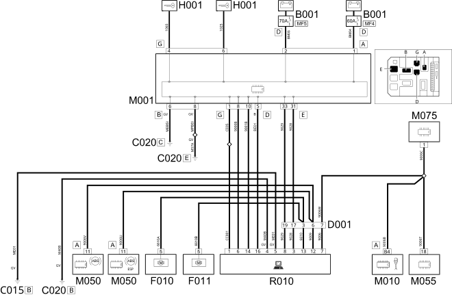

E8010 MULTIPLE DIAGNOSTIC CONNECTOR WIRING DIAGRAM
- Path
- Electrical equipment > 1 ELECTRICAL FUNCTIONS > E80 DIAGNOSTIC SYSTEMS > E8010 DIAGNOSTIC MULTIPLE CONNECTOR > E8010 MULTIPLE DIAGNOSTIC CONNECTOR WIRING DIAGRAM
- Kind
- topic
- Applies to
- engines: 2.0 16V JTD, 2.2 16V JTD; all production periods; only with equipment: MY 2005
- Interactive page
- https://sloeber94.github.io/elrnDB-fUlss/en/#/179009527
Applies to: engines: 2.0 16V JTD, 2.2 16V JTD; all production periods; only with equipment: MY 2005

Components
Component code | Description | Reference to the assembly |
|---|---|---|
ENGINE COMPARTMENT JUNCTION UNIT | Op. 5505A MULTIFUNCTION COMPONENTS | |
DRIVER'S DASHBOARD EARTH | - | |
PASSENGER SIDE DASHBOARD EARTH | - | |
FRONT/DASHBOARD COUPLING | - | |
LEFT HEADLAMP | ||
RIGHT HEADLAMP | ||
Ignition switch | Op. 5520A IGNITION SWITCH | |
BODY COMPUTER | ||
ENGINE MANAGEMENT CONTROL UNIT | ||
ABS CONTROL UNIT | ||
M051 | CENTRALINA IMPIANTO FRENANTE | - |
AUTOMATIC TRANSMISSION CONTROL UNIT | - | |
ADDITIONAL HEATER CONTROL UNIT | - | |
MULTIPLE DIAGNOSTIC COUPLING | - |
Topics linked from this page (17)
- 1060G DIESEL INJECTION PRESSURE PUMP ELECTRONIC CONTROL
- 3340A ABS CHECK/ADJUSTMENT DEVICES
- 5505A MULTI-FUNCTION COMPONENTS
- 5540B HEADLAMPS
- B001 ENGINE COMPARTMENT JUNCTION UNIT
- C015 DRIVER'S DASHBOARD EARTH
- C020 PASSENGER SIDE DASHBOARD EARTH
- D001 FRONT/DASHBOARD COUPLING
- F010 LEFT HEADLAMP
- F011 RIGHT HEADLAMP
- H001 Ignition switch
- M001 BODY COMPUTER
- M010 ENGINE MANAGEMENT CONTROL UNIT
- M050 ABS CONTROL UNIT
- M055 AUTOMATIC TRANSMISSION CONTROL UNIT
- M075 ADDITIONAL HEATER CONTROL UNIT
- R010 MULTIPLE DIAGNOSTIC COUPLING